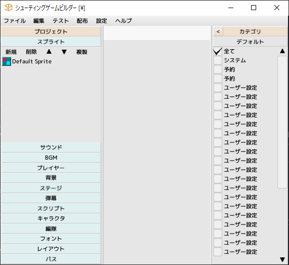

■元のページへ戻る
■元のページへ戻る

- プロジェクト
ウインドウ左側に表示されています
各種パーツ単位で分類されており、パーツ名をクリックするとそのパーツ一覧を表示できます
- カテゴリ
パーツ一覧に表示する内容を絞り込むことができます
パーツ編集画面からカテゴリ編集を開き、パーツにカテゴリを設定します
プロジェクトウインドウのカテゴリチェックを変更することで設定したパーツのみ表示するようになります
- 検索
パーツの名前を検索して一覧を表示します
検索結果をクリックするとプロジェクト内のパーツを表示します
ダブルクリックで編集ウインドウを開きます
キャラクタや編隊をドラッグし、ステージへの配置も行えます
- ドッキングエリア
ウインドウ中央部
編集ウインドウをドッキングする場所です
プロジェクト
各パーツを選択した状態で
注意、ここの操作はUNDOできません
- ダブルクリック
編集開始
- 新規
パーツの新規作成
- 削除
選択パーツを削除
- ↑
選択パーツを上に移動。SHIFT+で一番上へ。CTRL+で10単位で移動
- ↓
選択パーツを下に移動。SHIFT+で一番下へ。CTRL+で10単位で移動
- 複製
選択パーツを複製
カテゴリ
プロジェクト内のパーツ一覧に表示するパーツのカテゴリを絞り込みます
デフォルトでは「全て」にチェックが入っているため全パーツデータが表示されています
「全て」のチェックを外してから、表示させたいカテゴリにチェックを入れてください
デフォルトボタンで初期状態へ戻します
ショートカット
- CTRL+N
プロジェクトの新規作成
- CTRL+O
プロジェクトを開く
- CTRL+S
プロジェクトの上書き保存
- SHIFT+CTRL+S
プロジェクトの名前を付けて保存
- CTRL+Q
アプリ終了
- CTRL+F
次のウインドウ
- CTRL+B
前のウインドウ
- SHIFT+CTRL+F
検索ボックスをアクティブにする
- CTRL+G
システム変数名編集ウインドウ
- F5
テストプレイの実行
- F6
テストプレイの停止
- CTRL+D
デバッグウインドウを表示
- F7
配布ビルドウインドウを表示
- F8
ゲーム設定を表示
- F9
エディタ設定を表示
- F1
ヘルプ
- F2
バージョン情報
- F12
スクリーンショット保存
■ページ上部へ戻る